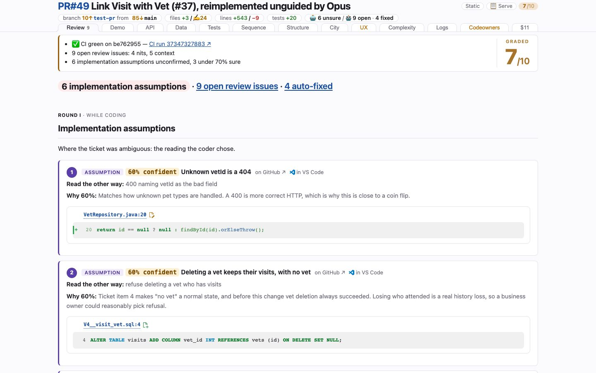

/human-review
Static snapshots of review pages, published so you can click through one without running the skill.

Open the live demo →Link Visit with Vet — A visit now records the vet that attended it.
/human-review is a skill for
Claude Code. It assembles one page, tabbed one question per tab,
that lets a human review a change set fast — what to look at first, what the diagrams say changed, what the REST
contract did, where it landed in the code, a video of the feature working, what it cost in complexity, and the tests
that pin it. Every code reference is a click into your editor, and every snippet is cut from the working tree at
build time, so the page cannot drift from the code it describes.
Published snapshots
Link Visit with Vet
A visit now records the vet that attended it.
- files +3 / ✍️24
- lines +525 / −9
- tests +20
- 🤖 6 unsure · 9 open · 4 fixed
Or download it as a zip and open
review.html off your own disk, or serve it exactly as it is here:
docker run --rm -p 8642:80 ghcr.io/victorrentea/human-review:demo, then open
localhost:8642.
Link Visit with Vet
A visit now records the vet that attended it — reimplemented unguided, and reviewed by the agent that wrote it.
- files +6 / ✍️37
- lines +1098 / −33
- tests +17 / ✍️6
- 🤖Code: 7 unsure; 🤖Review: 6 open, 3 fixed
Or download it as a zip and open
review.html off your own disk, or serve it exactly as it is here:
docker run --rm -p 8642:80 ghcr.io/victorrentea/human-review:petclinic-pr, then open
localhost:8642.
Owners grid: paged and sorted by Name or City
hr-claude-18 — issue #25
- files +7 / ✍️23
- lines +1372 / −291
- tests +48 / −9 / ✍️6
- 🤖 6 unsure · 9 open · 1 refuted · 4 fixed
Or download it as a zip and open
review.html off your own disk, or serve it exactly as it is here:
docker run --rm -p 8642:80 ghcr.io/victorrentea/human-review:demo2, then open
localhost:8642.
Screenshot galleries
Static, click-free snapshots — every tab as one full-page image, plus the feature video. Nothing to install, no vscode:// links to be disappointed by.
Attending vet on a visit — screenshots
test-pr vs main — 5acf2472 · #37 Link Visit with Vet. A visit now records the vet that attended it.
- tabs 11
- screenshots 22
- themes light + dark
- video yes
One caveat
Inside a snapshot, every code reference is a vscode://file/... deep link pointing at an
absolute path on the machine that generated the page. Those links only resolve there — on any other machine they open
nothing, or the wrong file. Everything else on the page (diagrams, video, complexity, snippets) is self-contained and
works anywhere.